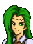

ワールドマップ
アグスティを失ったシャガール王は、
北のマディノ城に宮廷をうつした。Having lost Agusty, King Chagall moved his court to Madino Castle in the north.
エルトシャンとの約束どおり
シグルドはこれを追撃しなかった。True to his promise with Eldigan, Sigurd did not pursue him.
アグスティ城で兵を休めながら、
エルトシャンとの約束を果たすためWhile resting his troops at Agusty Castle, in order to keep his promise with Eldigan,
シグルドはアグスティ返還の交渉を
ねばり強く続けた。Sigurd persistently continued negotiations for the return of Agusty.
しかし、バーハラからの回答はいつも
そのままアグスティにとどまり、But the reply from Belhalla always remained the same: stay in Agusty
住民を統治せよというものだった。and govern the people there.
半年がすぎる間に
グランベルから派遣された役人たちが、As half a year passed, the officials sent from Grannvale
アグストリアの国土を
わがもの顔にのし歩くようになった。came to swagger about Agustrian territory as if it were their own.
アグストリアの民の不満は、
少しずつふくれあがっていった。The discontent of the people of Agustria swelled little by little.
やがて、シグルドが恐れていた
あらたな戦いが始まった。Eventually, the new war Sigurd had feared broke out.
マディノで兵をととのえたシャガールが
王都アグスティを取り戻そうと、Chagall, having readied his troops at Madino, tried to retake the capital, Agusty,
シグルドに戦いを挑んできたのだ。and challenged Sigurd to battle.
マディノの北では、
悪名高いオーガヒルの海賊がTo the north of Madino, the infamous pirates of Augerhill
戦に乗じて、動きはじめている。were beginning to stir, taking advantage of the war.
バーハラからの命令は、
アグスティ城を死守せよと告げていた。The order from Belhalla declared that Agusty Castle must be defended to the last.
出陣するシグルドの心は重かった。Sigurd's heart was heavy as he set out to battle.
マディノの南西、シルベール城には
エルトシャンの軍がひかえている。To the southwest of Madino, at Silesse Castle, Eldigan's army stood waiting.
この戦いは、
友を裏切るものになるかもしれない。This battle might turn him into a betrayer of a friend.
シグルドはこの時
アグストリアの北の果てで、At this time, Sigurd, at the northern edge of Agustria,
歴史をも変える戦いに臨もうとしていた。was about to face a battle that would change the course of history itself.
オープニング（マディノ）

軍の配備は終わったか
ヤツらに気付かれてはいないだろうな
よし、ならば手はず通りに進撃せよHas the army's deployment finished? Make sure they haven't noticed us. Good, then advance as planned.
アグスティを取り戻す
最後のチャンスだぞThis is our last chance to take back Agusty.
ヤツら、わしの国に
のうのうといすわりおってThose fools, settling into my country so brazenly...
・・・今にみておれよ
吠え面をかかせてやるからな...just you wait. I'll make them eat their words.
ジャコバン！
剣士ジャコバンはいるか！！Jacobin! Is the swordsman Jacobin here!?
俺に用か・・・You need me...?
その腕、見せてもらう時がきた
この城を守ってくれThe time has come to see that skill of yours. Defend this castle for me.
承知した・・・つまらぬ仕事だが金の為だ
このいかずちの剣の恐ろしさ
・・・たっぷりとみせてやろうUnderstood... it's a boring job, but it's for the money. This Thunder Sword's terror... I'll show you plenty of it.
それは心強い、頼んだぞジャコバンThat's reassuring. I'm counting on you, Jacobin.
あとはシルベールにいるエルトシャンか
・・・奴め、どう動くか・・・Now then, there's Eldigan at Silesse... that fool, how will he move...
オープニング（シルベール）
エルトシャン様、大変です
マディノ城が兵をあげました！Lord Eldigan, it's terrible! Madino Castle has raised its army!

なに、シャガール陛下が！？
くそっ・・・なんと早まったことを！
王都に帰れる日も近いというのに・・・What, Lord Chagall has!? Damn it... what a rash thing to do! Just when the day I could return to the capital was drawing near...
くっ・・・俺は、
シグルドとは戦うわけにはいかぬ
いったいどうすれば・・・Ugh... I cannot possibly fight Sigurd. What on earth should I do...
オープニング（オーガヒル）
おかしら、
南の方で戦が始まるようですぜ
こりゃあ、おもしろくなってきたBoss, looks like a war's starting down south. Heh, this is getting interesting.
このスキに、
俺達は村をいただきましょうLet's take advantage of this chance and help ourselves to the village.
今までは、アグストリアの軍隊がいて
手も足も出せなかったが、
今なら、ちょろいもんですよUntil now Agustria's army was around and we couldn't lift a finger, but now it'll be a cinch.

お黙り、ドバール！
こそ泥のまねなんかしたら、
あたしが承知しないよ！Hold your tongue, Dovar! If you try pulling some petty thievery, I won't forgive you!
あたしは、そんなケチな仕事は
しない信条なんだI don't do cheap work like that. It's a matter of principle.
義賊でならした、
オーガヒルの海賊の名が泣くよ！We've made a name for ourselves as righteous bandits—don't disgrace the name of the Augerhill pirates!
ちくしょう、せっかくのお宝を、
指をくわえて見てろってのか！
おかしらはあまいぜ！Damn it, are you telling us to just sit here twiddling our thumbs while treasure's right there for the taking! The boss is too soft!
まあ、落ちつけ、ドバール
俺にかんがえがあるNow, now, calm down, Dovar. I have an idea.
あの女はな、死んだおかしらの
ホントの娘じゃねぇんだThat woman isn't really the boss's own daughter, you know.
ガキのころにひろわれて、
この島でおかしらに育てられたんだよShe was picked up as a kid and raised by the boss on this island.
ヤツはそれも知らずに
後を継いだつもりでいるが
なに、気にするこたぁないShe thinks she's inherited the position without even knowing that. Well, no need to worry about it.
俺達だけで、お宝をいただこうぜLet's just help ourselves to the treasure, the two of us.
オープニング（アグスティ）
シグルド様！ 大変です！！
シャガール王の軍が
この城を包囲していますLord Sigurd! It's terrible!! King Chagall's army is surrounding this castle!

なに！ ばかな・・・
もうすぐ我々も国に帰るというのに
なぜ戦う必要があるのだWhat! That's absurd... we're about to return home soon, why would we need to fight?
エルトシャンはいったい・・・Just what is Eldigan thinking...
そのうえ、混乱に乗じて
オーガヒルの海賊まで動き出しましたOn top of that, taking advantage of the chaos, even the Augerhill pirates have started moving.
そうか・・・やむをえない
出陣しようI see... it can't be helped. Let's march out.

あなた・・・また戦いなのですかMy love... another battle, is it?
うむ、ディアドラ
すまないが、今度ばかりは
きみをつれて行けないIndeed, Deirdre, I'm sorry, but this time I can't take you with me.
生まれたばかりのセリスを
おいてはいけないからねI can't leave Celice, who was just born, behind.
はい・・・Yes...
そんな不安そうな顔をするな
ぼくはすぐに戻る、約束するよDon't make such an anxious face. I'll be back soon, I promise.
そうだ、シャナン、おまえに頼む
ディアドラとセリスを守ってやってくれRight, Shanan, I'll ask this of you—protect Deirdre and Celice for me.
うん！ 大丈夫だよ
ぼくがディアドラを守ってあげるから
シグルドは安心して行っていいよSure! Don't worry, I'll protect Deirdre, so Sigurd, go on ahead with peace of mind!
はは、シャナンはいつも元気がいいなHaha, Shanan's always so full of energy.
ディアドラ、これでおまえも
少しは気がまぎれるだろうDeirdre, this should ease your worries a little, at least.
心配するな
これが永久の別れじゃないだろうDon't worry. This isn't a permanent parting, you know.
シグルド様・・・・・・Lord Sigurd...
会話（レックス→アイラ）
※レックス、アイラともに恋人がいない、かつ会話（ホリン→アイラ）を見ていない場合のみ[Only if neither Lex nor Ayra has a sweetheart, and the Horin-Ayra scene hasn't been seen]

よお、アイラHey, Ayra.
レックスか・・・なにか用かLex, is it... what do you want?
ちっ、あいかわらず無愛想なヤツだなTch, as unfriendly as ever.
私はいそがしいのだ、
用がないなら行くぞI'm busy. If you have no business with me, go away.
まてよ、いいものを手に入れたから
おまえにやろうと思ったんだWait up, I got something good and thought I'd give it to you.
おくり物なら他の女にやれ
私はそんなものに興味はないIf it's a gift, give it to some other woman. I have no interest in things like that.
ふふっ これでもか？Heh heh, even this?
ん？ ・・・あっ！ それは・・・Hm? ...Ah! That's...
そうさ、勇者の剣とよばれる名剣だ
名前くらいはきいたことがあるだろうThat's right, it's a famous sword called the Hero's Blade. You must've at least heard the name.
これが勇者の剣・・・
なんて美しい剣なんだ・・・This is the Hero's Blade... what a beautiful sword...
気に入ってくれたようだな
じゃ受け取れ、ほらよっSeems you like it. Go on, take it, here.
あっ、待ってくれ、レックス！Ah, wait, Lex!
レックス・・・Lex...
(「ゆうしゃの剣 をてにいれた！」)
(レックスとアイラの恋愛値+100)
会話（ホリン→アイラ）
※ホリン、アイラともに恋人がいない、かつ会話（レックス→アイラ）を見ていない場合のみ[Only if neither Horin nor Ayra has a sweetheart, and the Lex-Ayra scene hasn't been seen]
アイラ、この剣を持っていけAyra, take this sword.
勇者の剣ではないか
なぜ私に？
おまえが自分で使えばいいものをIsn't this the Hero's Blade? Why give it to me? You should use it yourself.
大変な戦いになるという予感がする
お前のような戦い方をする剣士には
剣はいくつあっても邪魔にはなるまいI have a feeling this is going to be a tough battle. For a fighter with a style like yours, there's no such thing as too many swords.
それで自分の身を守れ
俺も、おまえを助けてやれるとは
限らんからなUse it to protect yourself. I can't always be there to help you, after all.
ホリン・・・・・・ありがとう
大事に使わせてもらうHorin... thank you. I'll put it to good use.
(「ゆうしゃの剣 をてにいれた！」)
(ホリンとアイラの恋愛値+100)
村訪問（マップ右端）
おお、これは、
助けにきてくださったのか
これでこの村の者もすくわれますぞOh, you've come to help us! Then this village's people will be saved too.
お礼と言ってはなんですが、
この魔法の杖を差し上げましょうIt's not much of a thank-you, but please accept this magic staff.
これはレストの杖といって、
スリープやサイレスの状態を
元にもどすことができるThis is called the Restore Staff—it can undo conditions like Sleep or Silence.
きっとお役にたちますぞI'm sure it will come in handy.
(「レストの杖 をてにいれた！」)
(「○○○○ ゴールドてにいれた！」)
村訪問（マディノ城東）
※シルベール城制圧前[Before Silesse Castle is subdued]
クロスナイツは
エルトシャン様が率いる精鋭の騎士団
その力は大陸一と言われているのよThe Cross Knights are the elite order of knights led by Lord Eldigan—said to be the finest in the whole continent.
じつはね、あたしの彼も
クロスナイツの一員なのよ
へへっ、すごいでしょActually, you know, my boyfriend is a member of the Cross Knights too. Heh heh, isn't that amazing?
(「○○○○ ゴールドてにいれた！」)
※シルベール城制圧後[After Silesse Castle is subdued]
うぅぅ、私の彼が
今度の戦争で死んでしまったのOhhh, my boyfriend died in this war.
これもグランベル軍の・・・
いいえ、シャガール王のせいよ！This is all because of the Grannvale army... no, it's because of King Chagall!
(「○○○○ ゴールドてにいれた！」)
村訪問（マディノ城北の左）
オーガヒルの海賊が
こんな酷いことをするなんて
いったいどうしたことだHow could the Augerhill pirates do something this awful, of all things...
わしらはあのブリギッドとかいう
女頭目を信じていたのに！We trusted that woman boss, Brigid!
(「○○○○ ゴールドてにいれた！」)
村訪問（マディノ城北の右）
ほっほー、よくきてくれたの
お礼にこの剣をやろうHo ho, well, thank you for coming. As thanks, I'll give you this sword.
これは、つばめがえしといってな
空を飛ぶものに
必殺をあたえる魔法の剣じゃThis is called the Swallow Strike—a magic sword that deals a critical blow to anything that flies.
そなたが使えなけば売ればよいぞIf you can't use it, you could sell it.
(「つばめがえし をてにいれた！」)
(「○○○○ ゴールドてにいれた！」)
村訪問（マディノ城西）
おお、よくきなすった
お礼といってはなんじゃが、
この村、秘伝のクスリを差し上げようOh, you've come a long way. It's not much of a thank-you, but please take this village's secret medicine.
さあ、のみなされHere, drink up.
どうじゃ、
体に力がみなぎってきたじゃろう
これでおまえさんも、もっと働けるぞThere now, don't you feel strength surging through your body? This should let you work even harder.
(訪問したユニットのSTR+3)
(「○○○○ ゴールドてにいれた！」)
村訪問（シルベール城北東）
気をつけな、シャガール王は
トラキアの竜騎士団を
雇ったってうわさだぜWatch out—there's a rumor that King Chagall has hired the Dragon Knights of Thracia.
ヤツらは戦争が起こるたびに
どちらかに雇われて
手当たりしだいに殺しまくるというThey say those fellows get hired by whichever side pays, whenever a war breaks out, and kill indiscriminately.
まるで死肉をくらう
ハイエナのようにな・・・Just like hyenas feeding on carrion...
(「○○○○ ゴールドてにいれた！」)
ジャコバン初戦時
ふっ、くらえ！
いかずちの剣！Hah, take this! Thunder Sword!
ジャコバン撃破時
む、無念・・・Gah, how... unfortunate...
マディノ城制圧時
シグルド様、
シャガール王のお姿が見当たりませんLord Sigurd, King Chagall is nowhere to be seen.
そうか・・・おそらく、
シルベールへ逃げたのだろう
あの城には、エルトシャンがいるI see... he's probably fled to Silesse. Eldigan is at that castle.
彼のクロスナイツが
アグストリア最後の戦力だHis Cross Knights are Agustria's last remaining military strength.
このまま、
剣をおさめてくれればいいのだがな・・・If only he'd sheathe his sword here and let it end...
(クロードとティルテュがマディノ城に向かう)
シグルド様、
エッダのクロード神父がおこしですLord Sigurd, Father Claude of Edda has come to visit.
なに！？ クロード様が・・・
すぐにお通ししてくれWhat!? Lord Claude has... bring him in at once.
シグルド公子、久しぶりですね
あなたにお話があってまいりました
実は国で大変な事がおこったのですLord Sigurd, it's been a while. I've come to speak with you—the truth is, something terrible has happened back home.
これはクロード様、
いったい何があったというのです？Why, Father Claude, whatever could have happened?
クルト王子が遠征の帰路、
何者かによって殺害されましたPrince Kurth was murdered by someone on his way back from the campaign.
えっ！？ まさか・・・
いったい誰がクルト様を！What!? No way... who on earth would kill Lord Kurth!
クルト様のお側には
いつもバイロン卿がおられた・・・Lord Byron was always at Prince Kurth's side...
だが、王子が殺害された日から
姿が見えないのです
言いにくいことですが・・・But he's been nowhere to be seen since the day the prince was murdered. This is hard to say, but...
王子殺害のうたがいはバイロン卿
・・・つまり、
あなたのお父上にかかっています・・・Suspicion for the prince's murder has fallen on Lord Byron... that is, on your own father...
なっ、なんですって！？ そんなバカな！Wh-what did you say!? That's absurd!
国ではよからぬうわさが
いろいろと立っていますAll sorts of baseless rumors are circulating back home.
なかには、
あなたとバイロン卿が意を通じて
王子を殺したというような事も・・・Some even say that you and Lord Byron conspired together to kill the prince...
陛下も心痛のあまり
倒れてしまわれましたHis Majesty has collapsed from the grief of it all.
父は王子に最も信頼されておりました
その父が王子を亡き者にして
いったいなんの得があるのでしょうMy father was the one the prince trusted most. What could he possibly gain from doing away with the prince?
うたがうべきは反王子派と言われている
レプトール、ランゴバルトの
両公爵ではないのですかShouldn't suspicion fall on the two dukes said to oppose the prince—Reptor and Langobalt?
私もそう思います
しかし証拠がないのですI think so too, but there's no proof.
今や宮廷はレプトール派によって
占められておりますRight now the court is dominated by the Reptor faction.
陛下の側近であるアルヴィス卿の
おかんがえはどうなのですWhat does Lord Arvis, His Majesty's close aide, think about this?
あの方のおかんがえは良くわかりません
あなたに敵意はないと思いますが
しかし味方かどうかは・・・I don't really understand what that man thinks. I don't believe he's hostile to you, but whether he's an ally... that I don't know.
そうですか・・・私も父が心配ですI see... I'm worried about my father too.
今すぐにでも国に戻りたいのですが
陛下から、この地を守るように
言われている為、それもかないませんI want to return home right away, but His Majesty has ordered me to defend this land, so I can't.
クロード様、
私はどうすればよいのでしょうFather Claude, what should I do?
私はこれから、北西の島にある
ブラギの塔に行くつもりですI intend to go now to the Tower of Baldr on the northwestern island.
あの聖なる塔で、
ブラギの末裔たる私がいのれば
すべての真実が明らかになりますIf I, a descendant of the holy Baldr, pray at that sacred tower, the whole truth should come to light.
私は陛下に
すべてをお話しするつもりです
シグルド公子、どうかご安心下さいI intend to tell His Majesty everything. Lord Sigurd, please rest easy.

クロードさまぁ、
ごちゃごちゃ言ってないで早くいこうよ
あたし、たいくつしちゃったFather Claude, stop dawdling and let's go already, I'm bored.
あれ？ きみはフリージ家のティルテュ
どうしてクロード神父と？Oh? You're Tiltyu of House Freege. Why are you with Father Claude?
だって神父様一人じゃ、心配でしょ？
あたしが守ってあげるのBecause the father's all alone and that's worrying, isn't it? I'm the one protecting him.
でもきみはレプトール公爵の娘なのに・・・But you're the daughter of Duke Reptor...
あたし、むずかしいことはわかんない
でも、神父様は大好き！I don't understand difficult things, but I love the father!
どうも・・・この子には困ります
・・・いずれにしても真実が分かり次第、
あなたの軍に合流しますHonestly... this child is a handful... in any case, once the truth is known, I'll join your forces.
一緒に国にかえりましょうLet's go home together.
わかりました、クロード様
どうかよろしくおねがいしますUnderstood, Father Claude. I'm counting on you.
(クロードとティルテュがブラギの塔に向かう)
(「マディノ城 をせいあつした！」)
マディノ城制圧時（アグスティ）
シャナン、シグルド様が
マディノ城を落とされたそうね
わたし、一度お会いしてくるShanan, I hear Lord Sigurd has taken Madino Castle. I'm going to go see him once.
だめだよ、ディアドラ
外はまだ危ないよ
それにセリスはどうするのNo way, Deirdre, it's still dangerous outside! And what about Celice?
だからセリスの事を
あなたにおねがいしたいのThat's why I want to ask you to look after Celice.
やだよ、ぼく
赤ちゃんの面倒をみるなんて
男のすることじゃないもんNo way, I don't wanna, taking care of a baby isn't a man's job!
お願い、すぐに戻るから
ね、シャナン、お願いだから・・・Please, I'll be right back, Shanan, please...
ちぇ、わかったよ
いいよ、行ってきなよ
でもすぐに戻るんだよTch, fine, I get it. Go on then. But come back soon, okay?
ありがとうシャナン、
セリス、ごめんね、
すぐに帰ってくるからねThank you, Shanan. Celice, I'm sorry, I'll be back soon.
(ディアドラがマディノ城へ向かう（途中まで）)

・・・ようやく見つけた
・・・シギュンの娘よ・・・...I've finally found you... daughter of Sigyun...
え、あなたはだれ？
・・・どうして母さまのなまえを・・・Huh, who are you? ...How do you know my mother's name...
ククッ・・・
おまえは今から生まれ変わる・・・Kukuku... you are about to be reborn...
わが暗黒魔法によって
全ての記憶を失い、ある男の妻になる・・・By my dark magic, you will lose all your memories and become some man's wife...
それがおまえの運命じゃ、
あきらめよ・・・That is your fate. Give up...
な、なにをするの！？ ・・・やめて！！
・・・ああっ・・・シグル・・・ド・・・さま・・・Wh-what are you doing!? ...Stop it!! ...Ahh... Sigur... d...
(ディアドラがマンフロイに魔法で記憶を消される)
(ディアドラ、マンフロイがマップ上から消える)
マディノ城制圧直後のシルベール軍フェーズ
(シャガールがシルベール城にやってくる)
なにをしていたのだ、エルトシャン！
貴様がグズグズしている間に、
マディノまでも落とされたではないか！What have you been doing, Eldigan! While you dawdled, even Madino has been taken!
さては貴様、
敵と通じて、国を滅ぼすつもりか？So then, you, in league with the enemy, mean to destroy this country?
陛下・・・そこまで言われるのか！Your Majesty... you would say such a thing to me!
なんだ、不満だというのか？What, are you dissatisfied?
父上から受けた恩も忘れて、
のらりくらりと時間をかせぐような奴に、
騎士としての扱いなどできるか！Forgetting the debt you owe my father, dragging your feet to buy time—can a man like that really be called a knight!
もはや何を言ってもむだのようです
わかりました、
シャガール陛下、われらは出撃しますIt seems nothing I say will do any good anymore. Understood, Lord Chagall. We will sortie.
私も誇りあるアグストリアの聖騎士
どうせ滅びるなら戦って滅びたいI too am a proud Holy Knight of Agustria. If I'm to fall either way, I'd rather fall fighting.
陛下、
後のことはよろしくおねがいしますYour Majesty, I leave the rest in your hands.
(シルベール城から、エルトシャン率いるシルベール軍が登場)
ついに出撃の時が来た
皆と生きて会えるのも、
これが最後かもしれぬThe time to sortie has finally come. This may be the last time we all meet alive.
今までのお前達の忠義を、
私は決して忘れはしないぞI will never forget the loyalty you have all shown until now.
これは、祖国の存亡をかけた戦いだ
騎士らしく存分に戦ってくれ
クロスナイツ、出撃せよ！This is a battle that wagers our homeland's very survival. Fight your fullest, as knights should. Cross Knights, sortie!
マディノ城制圧直後のシルベール軍フェーズ（シルベール）
エルトシャンめ、やっと出撃したか
もったいぶりおって・・・・・・That Eldigan, finally sortied, has he... taking his sweet time...
残った者は、城の守りを固めよ！
今から、お前達の指揮は私がとるぞThose who remain, firm up the castle's defenses! From now on, I will take command of you all myself.
(シルベール城から、シャガール率いるシルベール軍が登場)
シグルドとエルトシャンが接近したとき
エルトシャン、頼む！ 剣をひいてくれ！
私はおまえと戦いたくない！Eldigan, I beg you! Lower your sword! I don't want to fight you!
アグスティを返すという約束は、
私の命にかけても果たしてみせる
もう少しの間だけ、私を信じてくれ！I will fulfill my promise to return Agusty, even at the cost of my life. Just trust me a little longer!
・・・・・シグルド、
すまない、もう何も言うな...Sigurd, I'm sorry, say no more.
この上はともに騎士として
恥ずかしくない戦いをするだけだAt this point, all that's left is to fight a battle we need not be ashamed of, as fellow knights.
さあ、行くぞ、シグルド！
わが魔剣ミストルティン、
きさまにやぶれるか！！Now then, let's go, Sigurd! My magic sword Mystletainn—will it defeat you!?
会話（ラケシス→エルトシャン）

兄上！ 私です、ラケシスです！！
もう無意味な戦いはおやめ下さいBrother! It's me, Lachesis! Please, stop this meaningless battle.
シグルド様を裏切るのですか！？
友を裏切るのが、騎士の誇りなのですかAre you betraying Lord Sigurd!? Is betraying a friend a knight's pride!?
兄上！ シグルド様を信じて
あと少しの間だけでも、
戦いを思いとどまってくださいBrother! Trust Lord Sigurd and hold off on this battle, even just a little longer.
ラケシス・・・・、そんなに泣かないでくれ
もう他に手だてがないのだLachesis... don't cry like that, there's no other way left.
シャガール様を失えば、
アグストリアは滅亡してしまうIf I lose Lord Chagall, Agustria will be destroyed.
いいえ、兄上
シャガール様さえ、軍を退いて下さればNo, brother, if only Lord Chagall would withdraw his army,
シグルド様には
戦いを続けるおつもりはありませんLord Sigurd has no intention of continuing this fight.
どうかおねがいです
クロスナイツを率いる兄上の言葉を
シャガール様も無視はできないはずですPlease, I beg you—Lord Chagall surely can't ignore the words of you, who leads the Cross Knights.
・・・・・・わかった、ラケシス
もう一度、陛下を説得してみよう......Understood, Lachesis. I'll try persuading His Majesty once more.
同じ命をかけるなら、
不本意な戦にではなく友の為に戦うのが
騎士の生き方だろうIf I'm to risk the same life either way, the knight's way of living is to fight for a friend, not an unwilling battle.
ラケシス・・・
この剣をおまえにやろうLachesis... I'll give this sword to you.
これは、大地の剣！？
・・・兄上！ まさか！！This is... the Earth Sword!? ...Brother! No way!!
俺に万が一のことがあれば、形見と思え
ラケシス、死ぬなよ！If something happens to me, think of it as a keepsake. Lachesis, don't you dare die!
ああっ、待って！ エルト兄様！！Ahh, wait! Brother Elt!!
(エルトシャンがシルベール城に向かう)
陛下、これ以上の戦いは無意味です
どうか、兵をお退きくださいYour Majesty, this battle is pointless beyond this point. Please withdraw the troops.
アグスティは、いつの日にか必ず、
陛下のお手に戻りますAgusty will surely return to your hands someday.
エルトシャン、貴様！
今ごろ戻ってきて、何をほざくか！
やはり敵に内通していたのだな！Eldigan, you! Coming back now and spouting such things! So you really were colluding with the enemy after all!
誰か、その裏切り者をひっとらえろ！
首をはねて、さらし者にしてくれるわ！Someone, seize that traitor! I'll have his head cut off and put on display!
やはりムダだったか・・・残念だが、
アグストリアもこれまでだな・・・So it really was useless after all... too bad, but this is the end for Agustria too...
ふっ、バカなやつめ、
かんねんしおったか
よし、かまわぬ、ここで切れHeh, you fool, so you've resigned yourself to it. Fine, I don't care, cut him down right here.
ラケシス・・・・・・！Lachesis......!
(「だいちの剣 をてにいれた！」)
村訪問（シルベール城北）
ああ、よくきなすったね
この魔法のくすりをのむといいよ
守りの力が少しだけあがるからねAh, well, you've come a long way. Drink this magic medicine, it'll raise your defenses a bit.
(訪問したユニットのDEF+1)
(「○○○○ ゴールドてにいれた！」)
エルトシャン初戦時
この魔剣ミストルティンの
えじきになりたいか、Do you wish to become prey to this magic sword, Mystletainn,
死にたくないものは
私に近寄るな・・・・・！Those who don't want to die, do not come near me......!
エルトシャン撃破時
ゆるせ、
アグストリアの民よ・・・・・・Forgive me, people of Agustria......
エルトシャン撃破直後のシグルド軍フェーズ
なぜだ、なぜエルトシャンを
殺さなければならなかったのか・・・
私は一体、何のために戦っているんだWhy, why did I have to kill Eldigan... just what am I fighting for, after all...
シグルド様、どうか、
ご自分をおせめになりませんようにLord Sigurd, please, don't blame yourself.
今は、エルトシャン様の遺志をくんで、
アグストリアの民のために、
一日も早く平和を取り戻してくださいFor now, please carry on Lord Eldigan's dying wish and restore peace for Agustria's people as soon as possible.
エルトシャン死亡直後のシルベール軍フェーズ（シルベール）
トラバント、
竜騎士団の準備はできているのだろうなTravant, are the Dragon Knights ready?

心配いらぬ、もらった金の分は働くNo need to worry. For the money I was paid, I'll work.
ふん、気のきかぬ家臣どもより、
金で働く傭兵のほうが、
よっぽど役に立つではないかHmph, more useful than my spineless vassals, mercenaries who work for money, aren't they?
しっかりたのむぞ！I'm counting on you!
(パピヨン率いるシルベール軍が登場)

急げ、アグストリアは目の前だぞ！Hurry, Agustria is right before us!
今度の敵はグランベルだ
思う存分戦って、トラキア王国の名を
世界にとどろかせよ！This time the enemy is Grannvale. Fight to your heart's content and make the name of the Kingdom of Thracia ring out across the world!
パピヨン初戦時
ふふふ、
竜騎士団の恐ろしさ
思い知るがいい、覚悟しろ！Fufufu, know the terror of the Dragon Knights, prepare yourself!
パピヨン撃破時
ううっ・・・・
・・・トラキアに栄光あれ・・・！Ugh......glory to Thracia......!
パピヨン撃破直後のシルベール軍フェーズ
ちっ、パピヨンめ、しくじったか
このあたりが引き時か
アグストリアと心中する義理はないTch, Papillon's failed, has he. This is a good time to pull back. I have no obligation to go down with Agustria.
さらばだ、おろかなシャガール王よFarewell, foolish King Chagall.
シャガール初戦時
な・・・なんだ貴様ら！
私はアグストリアの王だぞ！
無礼者どもが！Wh-what are you, you rabble! I am the King of Agustria! You insolent fools!
くそう・・・
私が成敗してくれるわ！Damn it... I'll strike you down myself!
シャガール撃破時
わ・・・私の・・・
アグストリアが・・・・My... my Agustria......
シルベール制圧時
エルトシャン・・・Eldigan...
シグルド様、
どうか、お気を落とさないでくださいLord Sigurd, please, don't let your spirits fall.
それと、こんな時に申し訳ありませんが
アグスティの城から
シャナンが来ているようですAlso, I'm sorry to bring this up at a time like this, but it seems Shanan has come from Agusty Castle.
公子にお伝えしたい事があると・・・He says he has something he wants to tell you...
シャナンが・・・？Shanan is...?
シグルド、ごめん、ごめんなさいSigurd, I'm sorry, I'm so sorry.
どうした、泣いていてはわからない
何があったんだWhat's wrong, I can't understand you if you just cry. What happened?
ディアドラが出かけたまま帰らないんだ
シグルドに会いに行くって
出かけたまま・・・Deirdre went out and hasn't come back. She said she was going to see Sigurd...
ごめん、ぼくが守る約束だったのにI'm sorry, it was my promise to protect her.
なに！ ディアドラが！！
それでセリスは・・・
・・・・・・私の息子はどうした？What! Deirdre's...!! Then what about Celice... what happened to my son?
セリスはぼくが預かって
ほら、ここにいる
でもディアドラは・・・I kept Celice with me, look, he's right here. But Deirdre...
・・・そうか・・・わかった
シャナン、おまえのせいじゃない
もう気にするな、ディアドラは私が探す...I see... understood, Shanan, it's not your fault. Don't worry about it anymore, I'll go search for Deirdre myself.
だって、ぼくがもっと強く止めれば・・・
ごめんね、シグルドBut, if only I'd stopped her more firmly... I'm sorry, Sigurd.
ディアドラ・・・きみはいったいどこに・・・Deirdre... just where on earth are you...
(「シルベール城 をせいあつした！」)
シルベール制圧直後のオーガヒル軍フェーズ（オーガヒル）
おかしら！
アグストリアが負けましたぜ！Boss! Agustria's lost!
グランベルの奴ら、
こっちも攻撃してくるかもしれません
どうしやす？The Grannvale lot might come attack us too. What should we do?
ドバール！ もとはといえば
お前達があたしに黙って
村をおそったからだろうDovar! In the first place, it's because you lot raided a village without telling me, isn't it!
許さないよ！ お前達！！I won't forgive you! You lot!!
けっ、いいかげんにしやがれ！！
大人しくしてればつけあがりやがって！Keh, quit it already!! Get complacent if we go easy on you for once!
おまえは死んだおかしらの
本当の娘じゃねえんだYou're not really the former boss's true daughter, you know.
おそったフネに、一人泣いていた子供を
おかしらがひろって育ててくれたんだよThe boss picked up a crying kid from a raided ship and raised her, that's all.
そのガキが、いっちょまえに
俺達に指図するとはかたはらいたいぜAnd that brat has the nerve to order us around—how laughable.
な、なんだと・・・そんな・・・・Wh-what are you saying... that's not...
とにかく、おまえにはもう用はねえ
死んでもらうぜAnyway, we've got no more use for you. Time to die.
ちくしょう
そう、簡単にやられてたまるかい！Damn it, you think I'll just go down that easily!
(オーガヒル城から、ブリギッドが登場)
(オーガヒル城から、ドバール、ピサールが登場)
てめえら、あの女をやっちまいな
逃がすんじゃねえぜ！You lot, finish off that woman! Don't let her get away!
ピサール、俺は城にもどるからな
おまえは部下どもを率いて
アグストリアを荒らしてこいPisarr, I'm heading back to the castle. You lead the men and go pillage Agustria.
おう、しょうちしたぜ！Right, got it!
(ドバールがオーガヒル城に向かう)
(オーガヒル城から、ドバール、ピサール率いるオーガヒル軍が登場)
よし、橋をかけろ！
アグストリアは我らのものだ！！Good, lower the bridge! Agustria is ours now!!
(シルベール城の北に橋がかかる)
シルベール制圧直後のシグルド軍フェーズ
(ブラギの塔から、クロード、ティルテュが登場)
クロードさま、早く、早く！！
もう、おいのりは終わったのでしょう？Father Claude, hurry, hurry!! Isn't the prayer already over?
そんな所で、グズグズしてたら、
海賊に見つかって、殺されちゃうわよ！If you dawdle in a place like that, the pirates will find us and we'll get killed!
はいはい、ティルテュ、今行きますよ
ブラギ神へのいのりで
全ての事実がわかりましたYes yes, Tiltyu, I'm coming now. The prayer to the god Baldr revealed the whole truth.
やっぱり私が思っていた通りでしたよJust as I thought, it was exactly as I suspected.
それにね、失われていた聖遺物、
バルキリーの杖まで
見つけることができましたAnd what's more, I was able to find the lost holy relic, the Valkyrie Staff.
ほら、これをごらんHere, take a look.
なあに、そのきたない杖？What's that dirty-looking staff?
・・・ティルテュ、
そんな事を言っては罰が当たりますよ...Tiltyu, you'll be struck by divine punishment for saying such things.
この杖はね、死んだ人を
生き返らせる事ができる魔法の杖ですThis staff can bring the dead back to life.
聖者ブラギの子孫である
私だけが使えるのですOnly I, a descendant of the saint Baldr, can use it.
ふーん
じゃあ、あたしの好きだった
おばあちゃまも生き返るの？Huh, really? Then can that grandma I liked come back to life too?
ところがそうはいかないのです
いろいろと制約があって
だれでもという訳にはいきませんUnfortunately, it's not that simple. There are various restrictions, so it's not something that works for just anyone.
人間にはエーギルという
持って生まれた生命力があってね・・・Humans each have something called life-force, which they're born with...
ふぁーい・・・神父様の話は難しいから
あくびがでちゃうよEhh... Father's talk is too hard, it's making me yawn.
そんなことは、もうどうでもいいから
早く逃げようよAnyway, who cares about that, let's hurry and run.
ええ、そうですね、逃げましょうYes, you're right, let's flee.
会話（エスリン→キュアン）

キュアン・・・
あなたに謝りたいことがあるの・・・Quan... there's something I need to apologize to you for...

えっ？ どうしたんだエスリン
そんな深刻な顔をしてHuh? What's wrong, Ethlyn, making such a serious face?
これ・・・This...
ん・・・！？
こ、これはゲイボルグの槍じゃないか！
どうしてきみが・・・Hm...!? Th-this is the Gae Bolg lance, isn't it! How do you have this...
お父さまから預かっていたの
もし戦いが激しくなるようなら
あなたにわたすようにとI was entrusted with it by Father. If the fighting ever got intense, I was to hand it to you.
そうか、この槍があれば大助かりだ
でもどうして今まで黙っていたんだ？I see, having this lance would be a great help. But why have you kept silent about it until now?
この槍の言い伝えを
お父さまからきいたから・・・
ごめんなさい・・・Because I heard the legend of this lance from Father... I'm sorry...
・・・ゲイボルグにまつわる悲しい話か・・・
しかし私は信じてはいない
そんなものは、ただの伝説さ...A sad tale about Gae Bolg, is it... but I don't believe in it. That's just a legend, nothing more.
でも・・・But...
エスリン、私を信じろ
勝利はもうすぐだ
そしたら一緒にレンスターへ帰ろうEthlyn, trust me. Victory is near. And then let's go home to Leonster together.
幼いアルテナを
いつまでも一人にしておけないからなI can't leave little Altena alone forever, after all.
はい・・・、でもキュアン・・・
たとえどのようなことになろうと、
わたしたちは一緒よね・・・Yes... but Quan... no matter what happens, we'll stay together, won't we...
ディアドラのことを
かんがえているのか・・・
大丈夫さ、彼女ならすぐに見つかるさAre you thinking about Deirdre... don't worry, she'll be found soon, I'm sure.
うん・・・わたしもそう思いたいけど・・・
でも・・・Yeah... I want to believe that too, but... still...
エスリン？ 泣いているのか
なにか悪い予感でもするのか？Ethlyn? Are you crying? Do you have a bad feeling about something?
二人はもう二度と
めぐりあえないような気がするの・・・It feels like the two of them might never meet again...
あんなに愛しあってたのに、
どうしてなの・・・キュアン・・・They loved each other so much, so why... Quan...
エスリン・・・Ethlyn...
(「ゲイボルグ をてにいれた！」)
会話（シグルド→ブリギッド）
大丈夫か、ブリギッドAre you all right, Brigid?
おまえは誰だ！？
どうして私の名を知っているWho are you? How do you know my name?
村人からきいた話だが
オーガヒル海賊の女頭目は
力を持たない人々を守ってくれたそうだI heard it from the villagers—they say the woman boss of the Augerhill pirates protected the powerless.
きみのことだろうThat must be you.
そうか・・・
おまえがグランベルのシグルドか・・・
ならばしかたがない、殺すのなら殺せI see... so you're Sigurd of Grannvale... well then, there's nothing for it. If you're going to kill me, go ahead.
ははは、
なにか思いちがいをしているようだな
私はきみを迎えに来たのだHahaha, seems you've got the wrong idea. I've come to invite you.
どうだろう、
われわれと共に来ないか
きみの力をかしてほしいWhat do you say, won't you come with us? I want to borrow your strength.
私のようなものを迎えるというのか？You want to invite someone like me?
そうだ、きみがほしいThat's right, I want you.
シグルド公子・・・、
変わった人だ・・・Lord Sigurd... you're an odd one...
会話（ミデェール→ブリギッド）
※ミデェール、ブリギッドともに恋人がいない場合のみ[Only if neither Mideel nor Brigid has a sweetheart]

エーディン様・・・？Lady Edain...?
うん？ なんだおまえは？
私はおまえなど知らないぞHm? Who are you? I don't know you at all.
やはりエーディン様ではないのか・・・
でもこんなことって・・・So you're not Lady Edain after all... but how could this be...
変なヤツだな
なにをごちゃごちゃ言っているWhat a strange one. What's he muttering about...
あなたの名は・・・What's your name...
ブリギッドだが・・・Brigid, that's my name...
ブリギッド・・・美しい人だ・・・Brigid... what a beautiful person...
な、なんだと！ からかっているのか！！Wh-what did you say! Are you mocking me!?
あの方より美しい人がいたなんて
・・・信じられない・・・To think there was someone more beautiful than her... unbelievable...
わ、わたしはもう行くからな・・・I... I'm leaving now...
(ミデェールとブリギッドの恋愛値+100)
会話（エーディン→ブリギッド）

あなたは・・・やっぱりお姉様！
ブリギッド姉様ですね
私です、妹のエーディンです！You are... after all, Big Sister! Brigid, it's me, your little sister Edain!
どうか、思い出して下さいPlease, try to remember.
どうしてあたしの名を・・・それに、
あんたの顔、あたしにそっくりだねHow do you know my name... and besides, your face looks just like mine.
・・・・・・エーディン・・・
確かにきいたことがあるような・・・......Edain... I feel like I have heard that before...
私はあなたの双子の妹です
お姉様は五才の時に
海賊に連れ去られたのI am your twin sister. Big Sister, you were taken away by pirates at the age of five.
私、ずっと探していたのですI've been searching for you this whole time.
しかし、急には信じられない
何か証拠でもあるのかBut I can't believe it so suddenly. Do you have any proof?
ではこの弓を引いてみて下さいThen please, try drawing this bow.
うん？ ずいぶん立派な弓だが、
それがどうしたHm? It's quite a fine bow, but what of it?
引けばいいのか・・・・こ、これは
・・・どうした事だ・・・I just draw it...? Wh-what is this... what's happening...
！ ・・・私の中に
何か不思議な力が満ちてくる・・・
記憶が・・・よみがえる・・・! ...Some strange power is filling up inside me... my memories... are coming back...
ああ・・・むねが熱くなるわ・・・
エーディン、あなたはエーディン
・・・私の妹・・・Ahh... my chest feels hot... Edain, you are Edain... my little sister...
よかった・・・思い出して下さったのですね
その弓は、わが家に伝わる
神の弓イチイバルI'm so glad... you remember now. That bow has been passed down in our family—the god-bow Yewfelle.
神の武器を扱えるのは
直系の者一人だけと言われていますIt's said that only a direct descendant can wield a divine weapon.
わが家では、ブリギッド姉様、
あなただけなの
それがなによりの証拠でしょうIn our family, that's only you, Big Sister Brigid. That's the best proof there could be.
エーディン・・・
ああっ・・・よく顔を見せて・・・
お父様はお元気なの？Edain... ahh... let me get a good look at your face... is Father well?
弟は・・・アンドレイは・・・What about my brother... Andrey...
私も、いっぱい話したいことがあります
お姉さま・・・I have so much to tell you too, Big Sister...
(「イチイバル をてにいれた！」)
会話（クロード→シグルド）
シグルド公子！ やっと会えましたねLord Sigurd! I've finally met you!
クロード様！ ご無事でしたか！！
海賊におそわれたときいて
心配していたのですFather Claude! You're safe!! I was so worried when I heard the pirates had attacked you.
はい、ティルテュのおかげで
なんとか切りぬけられましたYes, thanks to Tiltyu, I somehow managed to get through it.
それよりもシグルドどの
ブラギのいのりは成功しましたよMore importantly, Lord Sigurd, the prayer at Baldr succeeded.
真実がわかったのですか！？You learned the truth!?
ええ、やはりレプトール卿の陰謀です
彼はランゴバルトを使って
クルト王子を殺しYes, it was indeed Lord Reptor's plot after all. He used Langobalt to kill Prince Kurth
その罪をあなたの父上、
バイロン卿になすりつけたのですand pinned the crime on your father, Lord Byron.
やはりそうでしたか！So it really was that, after all!
ええ、それに
イザークのマナナン王を殺したのも
レプトール卿の仕業でしたYes, and it was also Lord Reptor's doing that killed King Mannanan of Isaach.
彼は
イザーク征服の口実が無くなるのを恐れ
密かにマナナン王を殺したのですFearing he'd lose his pretext for conquering Isaach, he secretly killed King Mannanan.
そうだったのか、
やはりすべてはレプトールのしわざ・・・So that's how it was... so everything was Reptor's doing after all...
いや、彼の野望だけではありません
その背後には、実に恐ろしいものが
うごめいているようですNo, it's not just his ambition alone. Something truly terrifying seems to be lurking behind it.
ブラギ神さえ見通せぬほどの
邪悪な意識が存在しています・・・There exists some wicked consciousness so great that even the god Baldr cannot see through it...
邪悪な意識・・・
まさか暗黒教団が・・・
クロード様、それで、わが父上は！！A wicked consciousness... could it be the Dark Church... Father Claude, then what about my father!?
亡くなってはおられないようですが
生命の糸は今にも切れそうです・・・It seems he hasn't passed away, but the thread of his life could snap at any moment...
父上が・・・そんな・・・Father... no, it can't be...
私は急いで王都に戻り
真実を国王陛下に申し上げますI'll hurry back to the capital and report the truth to His Majesty.
シグルドどのは待っていて下さい
軽はずみな行動はなりませんよLord Sigurd, please wait here. You mustn't act rashly.
はい、わかっておりますYes, I understand.
クロード様、
お願いします、父上の汚名を
どうかはらしてくださいFather Claude, please, I beg you—please clear my father's disgraced name somehow.
はい、すべては神の御心のままに・・・Yes, everything is as God wills it...
村訪問（ブラギの塔北西）
また戦争がはじまったのかい
いやだねぇAnother war has started, how awful.
あたしたちには、アグストリアも
グランベルも関係ないんだよAgustria and Grannvale mean nothing to the likes of us.
戦争をやるなら、どっか他のところで
やってほしいねぇIf they're going to fight a war, I wish they'd do it somewhere else.
(「○○○○ ゴールドてにいれた！」)
デューが地形「ブラギの塔」の1マス下で待機したとき

おっ！ これがブラギの塔か
ヘヘっ、盗賊魂がうずいてきたぞ
何か、いいものないかなぁー・・・Oh! So this is the Tower of Baldr. Heh heh, my thieving spirit is tingling. I wonder if there's anything good...
(デューの姿がブラギの塔に消える)
んー、なんにもないなぁ
あっちはどうかな・・・Hmm, there's nothing here at all... what about over there...
・・・だめだなぁ、何もない・・・
・・・お前はだれだ・・・...No good, there's nothing... who are you...
え・・・！？
・・・ブラギの塔に何用だ・・・Eh...!? What business do you have at the Tower of Baldr...
きこえないフリしよ・・・
・・・聖地を侵す者は許さない
去れ・・・！I'll pretend I didn't hear that... I will not forgive those who defile this holy ground. Leave......!
ひぇー！！ お許しくださーい！Yikes!! Please forgive me!
(デューがブラギの塔から出てくる)
はぁ、びっくりしたー
・・・あれ？
こんなところに剣が落ちてるWhew, that scared me... huh? There's a sword lying around in a place like this.
うーん、キョロキョロ・・・
・・・もらっとこHmm, let me take a quick look around... I'll just take this.
(「かぜの剣 をてにいれた！」)
ピサール初戦時
グランベル軍がなんだ！
オーガヒルの海賊の恐ろしさ
たっぷり楽しませてやるぜ！What do I care if it's the Grannvale army! I'll have you enjoy the terror of the Augerhill pirates to the fullest!
ピサール撃破時
くそ・・・
オーガヒルの海賊が
負けるはずが・・・Damn it... there's no way the Augerhill pirates could lose...
ドバール初戦時
くそっ、どいつもこいつも
役立たずばかりだ！Damn it, every single one of you is useless!
ドバール撃破時
ちくしょう・・・Dammit......
オーガヒル城制圧時
海賊どもの城は制圧したThe pirates' castle has been subdued.
オイフェ、
全軍に集まるように言ってくれ
みんなが無事かどうか心配だOifey, tell the whole army to gather. I'm worried whether everyone's safe.
はい、シグルド様Yes, Lord Sigurd.
(アグスティ城の東から、レプトール、ランゴバルト率いるグランベル軍が登場)

よし、全軍に告ぐ
反逆者シグルドと
その一味をひっ捕らえよNow then, I declare to the whole army: seize the traitor Sigurd and his band!
ヤツらはバイロンと共謀して
クルト王子を殺し、
王国をわがものにしようとしたThey conspired with Byron to kill Prince Kurth, and tried to make the kingdom their own.
陛下のご命令だ！
国家に刃向かう者に容赦するな！！This is His Majesty's order! Show no mercy to those who defy the nation!!

ククッ、ランゴバルトも厚顔な・・・Kukuku, even Langobalt is being quite shameless...
自らの手で王子を殺し
抵抗したバイロンまで
傷つけておきながら、Even while hurting Byron, who resisted after killing the prince with his own hands,
よくもあそこまで言えるものだ
しかしアルヴィスめ
陛下の信任厚いのをよいことにto think he can say such things... but that Arvis, taking advantage of His Majesty's deep trust in him,
うまく言いくるめおったわ
もとはと言えば
すべてヤツが計画したことなのにspun a fine story, didn't he. In the first place, if we're talking about who planned all this, it was him,
その罪をことごとく
シアルフィ家になすりつけるとはなand yet he's pinning the blame entirely on House Sylvail.
ふふっ、まあよかろう
わしらは約束通り
一国の王となれればそれでよいHeh heh, well, it's fine. As long as we can each become king of a country as promised, that's good enough.
邪魔者には消えてもらわねばならぬ・・・Troublesome people must be made to disappear...
オーガヒル城制圧時（オーガヒル）
なんだと！？ 私が反逆者だと・・・？What's this! I'm the traitor...?
グランベルから
私を捕らえるための大軍が
来たというのか！！You mean to say a great army has come from Grannvale to capture me!?
シグルド様・・・やっと戦いが終わり、
ディアドラ様を捜そうと
言っていた矢先に・・・Lord Sigurd...... just as the fighting finally ended, right when we were about to go search for Lady Deirdre...
くっ・・・
陛下はレプトール達の言葉を
信じてしまわれたのかUgh... has His Majesty really believed Reptor and the others' words?
父上がクルト王子を殺したなどと
本当に信じられたのかDid he really believe that my father killed Prince Kurth?
ああっ、せめてクロード神父が戻るまで
待っていてほしかったAhh, if only I'd waited at least until Father Claude returned.
私は何のために
エルトシャンを死なせてまで
戦ってきたのだ！Just what have I been fighting for, to the point of letting Eldigan die!
シグルド様・・・・・・Lord Sigurd......
(マーニャ、天馬騎士団がオーガヒル城に向かう)

シグルド様、私はシレジアの騎士、
マーニャと申しますLord Sigurd, I am a knight of Silesse, Mahnya.
ラーナ王妃のご命令で、
シグルド様をお迎えに参りましたBy order of Queen Lahna, I have come to escort you.
どうか今はシレジアまでお退きください
名誉を回復なさる時まで、
シレジアで機をお待ちくださいPlease, withdraw to Silesse for now. Please wait in Silesse until the time comes to restore your honor.
・・・シレジアのラーナ王妃が？...Silesse's Queen Lahna?
祖国に裏切られた私を、
シレジアが救って下さるというのかBetrayed by my own homeland, and now Silesse would save me?
シグルド様、時間がございません
いずれグランベルの追撃も
始まるでしょうLord Sigurd, there's no time. Grannvale's pursuit will begin before long.
天馬騎士団が、海をこえて、
シレジアまでお供いたしますThe Pegasus Knights will cross the sea and escort you all the way to Silesse.